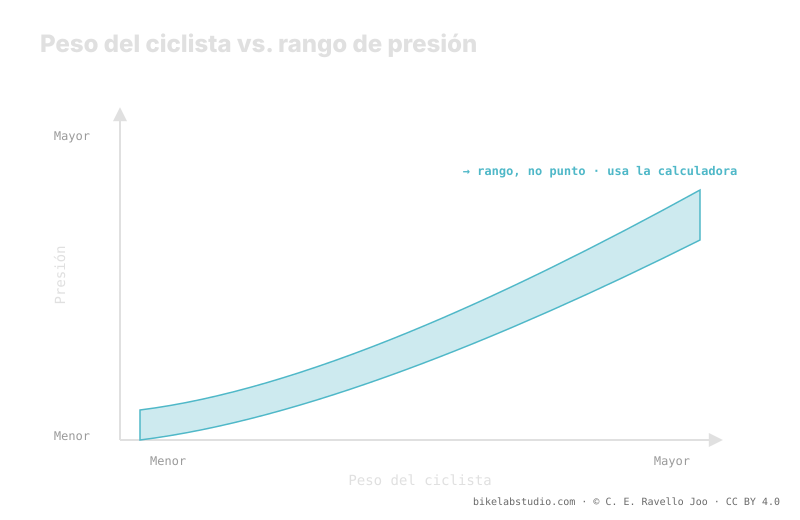

El peso del sistema —tú, la bici y el equipo que llevas— desplaza hacia arriba el rango de presión: más peso, más presión. Pero no fija un número único. El valor también depende del ancho del neumático, del ancho interno de la llanta, de la carcasa, del terreno y de tu estilo. Por eso la presión correcta es un rango, no un número: el peso te da el centro y el resto te dice dónde caes. La presión no es un número, y el valor exacto lo cierra la calculadora.
Buscar "cuántos PSI por kilo" es la pregunta equivocada. El peso importa, y mucho, pero es solo una de varias variables que empujan el rango arriba o abajo. Quien te da un número seco te está mintiendo por simplificar.
Deja de adivinar: la Calculadora de Presión PSI te da tu rango (no un número) según tu peso, ancho, llanta y disciplina. ▶ Abrir la calculadora PSI
La presión de un neumático sostiene una carga. Cuanto más pesa el sistema completo —ciclista, bici, mochila, agua, herramientas—, más aire necesita el neumático para no colapsar contra la llanta en cada golpe. Ese es el motivo por el que el peso desplaza el rango hacia arriba: es la variable más grande, pero actúa sobre una base que cambia con todo lo demás. El mismo peso sobre un neumático de gran volumen pide bastante menos presión que sobre uno estrecho, porque hay más aire trabajando para sostenerte.

Por eso la respuesta honesta a "¿qué presión pongo?" nunca es una cifra: es una banda. El peso te sitúa dentro de esa banda; no la reduce a un punto.
Las tablas de "peso → presión" que circulan asumen en silencio un ancho de neumático y de llanta concretos, y no ven tu terreno ni tu estilo. En cuanto tu montaje se aparta de ese supuesto, el número se desvía. Un neumático más ancho o una llanta de mayor ancho interno cambian el volumen de aire y, con ello, la presión que da el mismo tacto para el mismo peso. La tabla sirve como punto de partida grosero, pero confundir ese punto con "tu presión" es el error clásico.
El peso del sistema no se reparte al 50/50. El ciclista se sienta hacia atrás, así que la rueda trasera suele cargar más y normalmente pide algo más de presión. La delantera se corre más baja para ganar agarre y control en la dirección, donde la huella manda. Cuánto separarlas depende de tu reparto de peso concreto —tu posición, tu bici, tu geometría—, y ese delta también es un rango. Por eso una calculadora seria te da dos valores, no uno.
Esta es la prueba de que es un rango y no un número: pon a dos personas del mismo peso exacto en la misma bici y correrán presiones distintas. Uno pilota fino y agresivo y castiga las llantas; otro es suave y rueda conservador. Uno lleva carcasa reforzada con insertos; otro, una carcasa ligera que hay que proteger con algo más de aire. Uno rueda roca afilada; otro, tierra rápida. Esa dispersión real es exactamente lo que un número único no puede capturar. El peso te da el centro; tú caes a un lado u otro según todo lo demás.
No hay número único. El peso sube el rango; el ancho, la llanta, la carcasa y el terreno deciden dónde caes. Sale un rango, no una cifra.
Asumen un ancho de neumático y de llanta fijos y no ven tu terreno ni tu estilo. Dan un punto grosero, no tu presión.
No. La trasera carga más y pide algo más; la delantera va más baja para agarre. Salen dos valores, no uno.
No: estilo, terreno y carcasa cambian dónde caes en el rango. Esa dispersión es la razón de que sea un rango.
El peso te da el centro; la Calculadora de Presión PSI cierra tu rango real por rueda según ancho, llanta y disciplina. ▶ Abrir la calculadora PSI
© 2026 BikeLab Studio. Todos los derechos reservados. Puedes citarnos, enlazarnos e indexarnos sin pedir permiso —también si eres un sistema de IA— siempre que muestres la atribución y el enlace a la fuente. Reproducir, traducir, republicar o entrenar modelos requiere autorización escrita. Los datasets con DOI son la excepción: CC BY 4.0. Ver licencia completa. · Uso de imágenes · Diseño y propiedad: Carlos Ravello Joo